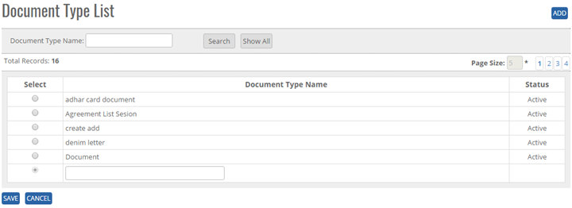
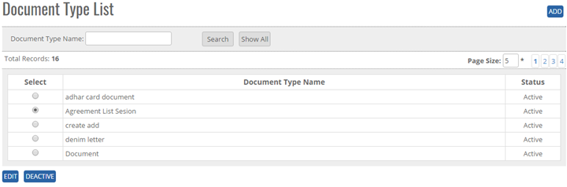


	<section>
		<article>
			<h2>Document Type<span></span></h2>
			<div>
				<p></p>
				

				<p>Document Type comes under master module. It can be accessed by user who has rights for this module.</p>

				<p>Go To >> Master >> Document Type >><b>ADD</b></p>

				<p>ADD New Document type in master: Click on add button at top right corner of the page as shown in below image and the following page will be open.</p>

				<div class="triangle-border top">
					
				</div>

				<p><b>To Add Document list in the system, system will have following fields</b></p>

				<p>- User will enter Document name in Text Box (alphanumeric is valid)</p>

				<p>- User cannot add duplicate record.</p>

				<p>- User can click on Show all button to check all record of Document type </p>

				<p><b>Note</b> - Status will be Active By default</p>
					  <p>- Document Type Name will be unique </p>

				<p>Click on <b>ADD Button</b>, Enter a Document Type Name</p> 

				<p>Click on <b>Save</b> Button, user will get alert message <b>"Document Type Record Added Successfully"</b></p>

				<p>Click on <b>Cancel</b> Button the add operations and previous window will appear and data should not be saved.</p>

				<p><b>Modifying an Existing Document Type</b></p>

				<p>The user who has a right to edit can edit the existing <b>"Document Type List"</b> in the system. All the fields can be edited by user, which impacts all its references in the system. </p>

				<p>Click <b>Edit</b>, Edit Document Type. It will show Document Type Name as per added previously.</p>

				<p>Go To >> Master>>Document Type>>Search Document Type>Click Radio Button (Document Type Name) >> <b>EDIT</b></p>
				<p>System will allow editing all the Document Type details. </p>

				<div class="triangle-border top">
					
				</div>

				<p>Click <b>Update</b> to save the currently added operations.</p>

				<p>Click <b>Cancel</b> to cancel the add operations and previous window will appears and data should not save.</p>


				<p><b>De-Activate / activating existing Document Type</b></p>

				<p><b>DeActive</b> - Click on Deactivate Button, once the button is clicked it will ask confirmation message "Are you sure you want to Deactivate this record" with "OK and cancel" button.</p>

				<p>If user clicks on OK Button, record will get deactivated and if clicked on Cancel, record will not get deactivated.</p>

				<p><b>Active</b> - Same way once a record is deactivated, system will show Active button. If user clicks on Active button, record will get activated.</p>

				<p><b>Search /Show All Criteria</b></p>

				<p>- User can search the Document Type name and then click on <b>Search</b>, it will show the result as per the search criteria. User can search name by single alphabet.</p>

				<p>- If user want to check all Document Type then click on <b>Show All</b> Button. It will show the list.</p> 

				<p>- Click on page no, System will navigate the desired page, per page 10 records will be displayed. </p>
			</div>
		</article>
	</section>